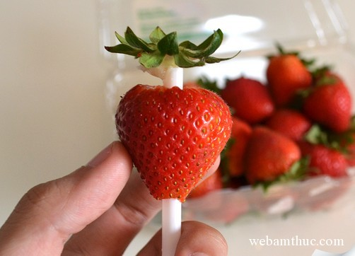
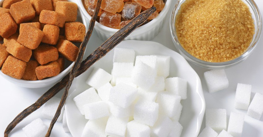
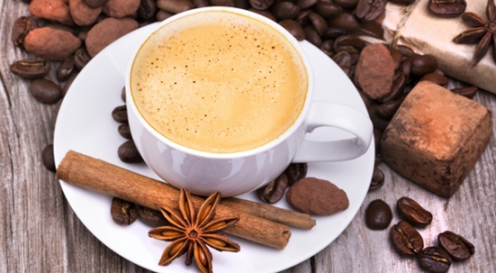

-

Chuẩn bị nhanh 5 loại trái cây mùa hè là chuẩn không cần chỉnh
Mùa hè dần đến với nhiều loại trái cây ngọt mát như lựu, dâu, đào… Nhưng không phải ai cũng biết cách chuẩn bị những loại trái cây này vừa nhanh vừa tiện. Xem chi tiết » -

TOP 6 thực phẩm có thể gây ung thư cao và nhanh một cách kinh hoàng
Ung thư là một trong những căn bệnh đáng sợ nhất đối với loài người và thực phẩm mà chúng ta ăn hàng ngày chính là nguồn gây ung thư đứng vị trí đầu bảng.... Xem chi tiết » -

Những loại nước ép giúp chị em có làn da "không tuổi"
Sau đây là một số loại nước giải nhiệt mùa hè có tác dụng chống lão hóa chị em cần bổ sung thường xuyên để làn da mịn màng, tươi trẻ hơn nhé! Xem chi tiết »
-

10 mẹo nhỏ khiến ly cà phê ngon hơn bạn tưởng
Cà phê là thức uống được ưa thích trên toàn thế giới. Nhưng không hẳn ai cũng biết cách để hưởng thụ được loại đồ uống này một cách ngon nhất. Cùng tham khảo nhé! Xem chi tiết » -

Những thực phẩm dành cho mắt cận
Hơn 90% những người cận thị quan tâm tìm cách làm sao để mắt khỏe và sáng hơn. Thật đơn giản hãy chú ý bổ sung dinh dưỡng bằng thực phẩm hàng ngày. Vậy nên ăn gì bổ mắt cận – mang lại đôi mắt tinh anh? Xem chi tiết » -

Mẹo pha nước chấm ngao, ốc siêu hấp dẫn
Để có bát nước chấm ốc luộc, ngao hấp ngon cũng cần có bí quyết chị em nhé!
Xem chi tiết